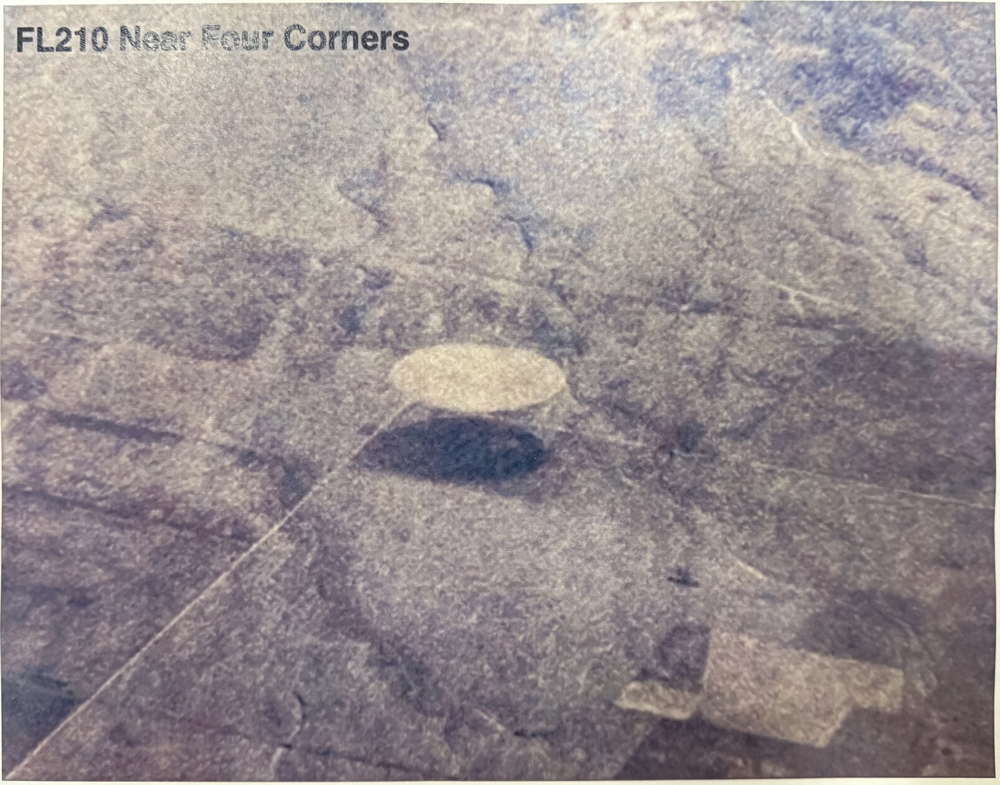

En Syrie, un capteur infrarouge à bord d'une plateforme militaire américaine suit un contraste qui, lorsque le capteur cesse de le poursuivre, sort rapidement du champ par la droite. Celui qui dépose la vidéo sur un réseau classifié en la retouche, la ralentit et la présente comme une accélération instantanée DOW-UAP-PR051, "Syrian UAP instant acceleration", PURSUE n° 2, .

La photo de deux cercles d'irrigation près de Four Corners (USA), qui sera présentée comme inexpliquée par Luis Elizondo
.